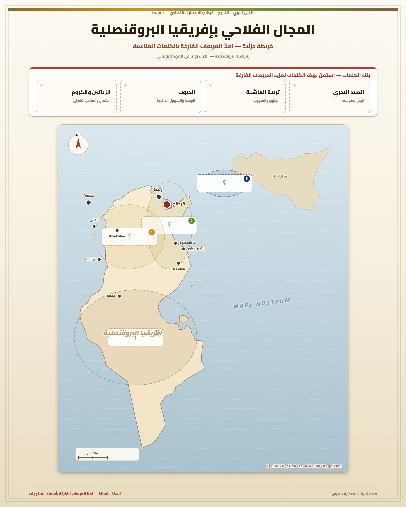
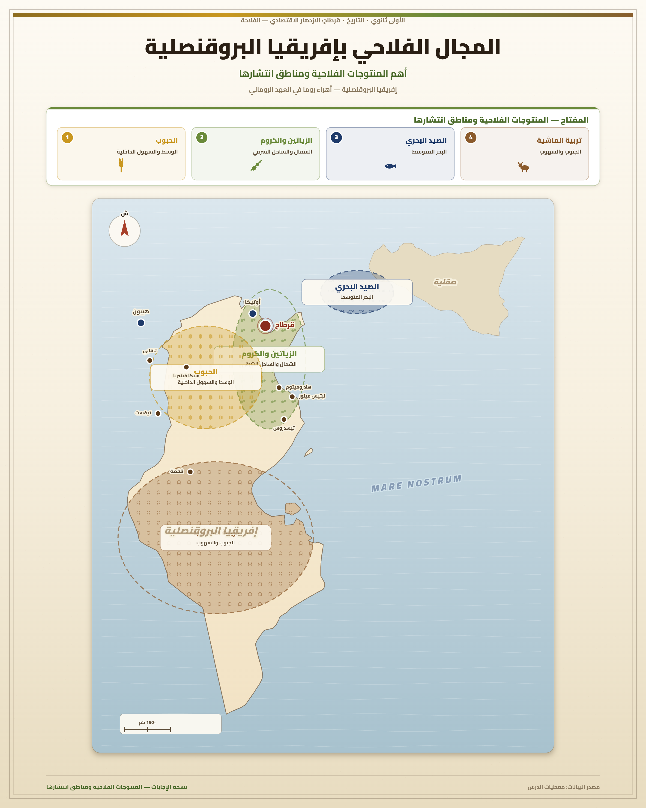

تمارين – قرطاج وإسهاماتها في الحضارة الرومانية: الازدهار الاقتصادي – الفلاحة
- قانون منسيانا:
- قانون روماني مشجع للفلاحة، صدر بداية من القرن الأول ميلادي، وينص على إعفاء الفلاح الصغير من دفع الضرائب على أشجار الزياتين التي غرسها حديثًا ولم تبلغ طور الإنتاج.
- قانون هدريانا:
- قانون روماني مشجع للفلاحة، نسبة إلى الإمبراطور هدريانوس الذي ينتمي إلى عائلة الأنطونيين وحكم بين 171م و138م، مكّن مزارعي الزياتين والأشجار المثمرة من امتيازات جبائية هامة، وسمح باستغلال الأراضي البور، ووفّر المنشآت المائية.
- سياسة الرومنة:
- سياسة انتهجتها روما، تهدف إلى إدماج السكان الأصليين واستغلالهم لخدمة مصالح روما، ومن بين مظاهرها إصدار القوانين المشجعة للفلاحة.
- المسح العقاري:
- عملية قامت بها السلطات الرومانية لتحديد الممتلكات الفلاحية بهدف تنمية المجال الفلاحي.
- موسوعة ماغون:
- موسوعة فلاحية قرطاجية وضعها ماغون (عالم الفلاحة القرطاجي)، تضمنت نصائح وتقنيات الزراعة وكيفية التعامل مع العمال وطرق صناعة الخمور وزيت الزيتون، وقد استفاد الرومان منها إثر قرار مجلس الشيوخ بترجمتها إلى اللغة اللاتينية.
- أهراء روما:
- لقب أُطلق على إفريقيا البروقنصلية في القرن الثاني ميلادي بفضل طفرة إنتاج الحبوب والزيتون، إذ أصبحت المزود الرئيسي لروما، وانفردت بتوفير حاجياتها من الإنتاج الفلاحي منذ نهاية القرن الثالث ميلادي (زيوت، حبوب، خمور).


ازدهرت الفلاحة بولاية إفريقيا البروقنصلية، واكتسحت الكروم والزياتين مناطق الشمال والساحل الشرقي، وامتدت إلى الوسط والجنوب، بالإضافة إلى إنتاج الحبوب وتربية الماشية والصيد البحري. وقد تميز الإنتاج الفلاحي بضخامته، فارتفعت صادرات الحبوب نحو روما بتوفير ثلثي حاجياتها. وانفردت ولاية إفريقيا البروقنصلية بتوفير حاجيات روما من الإنتاج الفلاحي منذ نهاية القرن الثالث ميلادي (زيوت، حبوب، خمور).
| المنتوج الفلاحي | ترتيب الأهمية |
|---|---|
| الحبوب | 1 |
| الزيتون والزيوت | 2 |
| الكروم والخمور | 3 |
| تربية الماشية | 4 |
| الصيد البحري | 5 |
المصدر: معطيات الدرس حول الازدهار الفلاحي بإفريقيا البروقنصلية
- مقدمة: تقديم إفريقيا البروقنصلية كمزود رئيسي لروما بالمواد الفلاحية.
- تطوير: أولاً. عوامل الازدهار الفلاحي (سياسة روما المشجعة والموروث القرطاجي)؛ ثانياً. مظاهر الازدهار الفلاحي (تنوع الأنشطة وضخامة الإنتاج)؛ ثالثاً. دور الازدهار الفلاحي في تطوير الصناعة والتجارة.
- خاتمة: حصيلة الازدهار الفلاحي وأثره على الاقتصاد الروماني.
مقدمة
مثلت قرطاج عاصمة إفريقيا البروقنصلية الرومانية، وأصبحت المزود الرئيسي لروما بالمواد الفلاحية. وقد بلغت هذه الولاية ازدهارًا فلاحيًا ملحوظًا ساهم بدوره في ازدهار بقية القطاعات الاقتصادية.
تطوير
أولاً. عوامل الازدهار الفلاحي
يُفسَّر الازدهار الفلاحي بعاملين أساسيين: أولاً سياسة روما المشجعة للفلاحة، إذ أصدرت بداية من القرن الأول ميلادي عدة قوانين مشجعة، منها قانون منسيانا الذي ينص على إعفاء الفلاح الصغير من دفع الضرائب على أشجار الزياتين التي غرسها حديثًا ولم تبلغ طور الإنتاج، وقانون هدريانا (نسبة إلى الإمبراطور هدريانوس) الذي مكّن مزارعي الزياتين والأشجار المثمرة من امتيازات جبائية هامة، وسمح باستغلال الأراضي البور، ووفّر المنشآت المائية. وتهدف هذه القرارات إلى إدماج السكان الأصليين واستغلالهم لخدمة مصالح روما في إطار سياسة الرومنة، وقد قامت السلطات الرومانية أيضًا بالمسح العقاري لتحديد الممتلكات الفلاحية. وثانيًا أهمية الموروث القرطاجي، إذ اهتم القرطاجيون بغراسة الزياتين والأشجار المثمرة ووضعوا أساليب وتقنيات الإنتاج الفلاحي، ومنها موسوعة ماغون التي تضمنت نصائح وتقنيات الزراعة وكيفية التعامل مع العمال وطرق صناعة الخمور وزيت الزيتون، وقد استفاد الرومان منها إثر قرار مجلس الشيوخ بترجمتها إلى اللغة اللاتينية.
ثانياً. مظاهر الازدهار الفلاحي
تمثلت مظاهر الازدهار الفلاحي في تنوع الأنشطة وضخامة الإنتاج. فازدهرت الفلاحة بولاية إفريقيا البروقنصلية، واكتسحت الكروم والزياتين مناطق الشمال والساحل الشرقي، وامتدت إلى الوسط والجنوب، بالإضافة إلى إنتاج الحبوب وتربية الماشية والصيد البحري. وتميز الإنتاج الفلاحي بضخامته، فارتفعت صادرات الحبوب نحو روما بتوفير ثلثي حاجياتها، وانفردت ولاية إفريقيا البروقنصلية بتوفير حاجيات روما من الإنتاج الفلاحي منذ نهاية القرن الثالث ميلادي (زيوت، حبوب، خمور).
ثالثاً. دور الازدهار الفلاحي في تطوير بقية الأنشطة الاقتصادية
ساهم الازدهار الفلاحي في ازدهار الصناعة، إذ نمت الصناعات الضرورية لتحويل الإنتاج الفلاحي كمعاصر الزيتون، وازدهرت صناعة الخزف لخزن ونقل المنتوجات الفلاحية. كما ساهم في ازدهار التجارة، إذ انتعشت التجارة الخارجية وتكثفت الصادرات الفلاحية عبر الموانئ المتوسطية مع بقية بلدان المتوسط، وتكثفت التجارة الداخلية حيث تعددت الأسواق والمحلات التجارية لبيع مختلف المنتوجات (فلاحية وحرفية).
خاتمة
هكذا بلغت إفريقيا البروقنصلية ازدهارًا فلاحيًا بفضل سياسة روما المشجعة للفلاحة وأهمية الموروث القرطاجي، وهو ما ساهم بدوره في ازدهار الصناعة والتجارة الداخلية والخارجية، وجعل من هذه الولاية أحد أعمدة الاقتصاد الروماني في العهد الإمبراطوري.
الخط الزمني: القرن الأول ميلادي: بداية إصدار القوانين المشجعة للفلاحة ... 171م – 138م: حكم الإمبراطور هدريانوس ... نهاية القرن الثالث ميلادي: انفراد إفريقيا البروقنصلية بتوفير حاجيات روما من الإنتاج الفلاحي ... 430م: وفاة القديس أوغسطينوس.